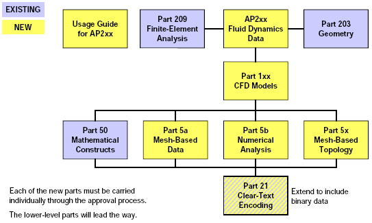

Status of the ISO-STEP Initiative for CGNS-Based Fluid Dynamics Standard
Presented to the AIAA CGNS Subcommittee
January 9, 2001
Raymond R. Cosner
Senior Technical Fellow
Boeing, Phantom Works
St. Louis, MO
(314) 233-6481
Raymond.R.Cosner@Boeing.com
What Is STEP?
- STEP is an acronym
- STandard for the Exchange of Product model data
- Formal name is ISO 10303
- Industrial automation systems and integration
- Product data representation and exchange
- Intended (eventually) to cover the complete life cycle of all
industrial products
- PDES is Product Data Exchange using STEP
- PDES is the U.S. effort, administered through the IGES/PDES
organization, to support the development and deployment of the
international STEP standard
STEP Approach
- The most viable solution:
- public NOT proprietary data model;
- supports extension for additional application;
- has publicly defined interface/access mechanisms;
- usable and stable over the life span of the products and their
supporting information;
- designed and validated to industry defined needs;
- allows CAD/CAM/CAE industry to construct a compatible suite of
engineering software.
Four Levels of Exchange
- Level 1 - Physical file transfer
- communication between two remote processes in which data is
exchanged via a sequential file of an agreed upon format.
- Level 2 - Shared memory access exchange
- communication between two concurrent processes in which data
is exchanged via agreed upon data access processes. There is
no assertion of data persistence.
- Level 3 - Shared database access exchange
- communication between two or more asynchronous processes in
which data is exchanged via agreed upon access processes to a
persistent data repository.
- Level 4 - Knowledge-based data exchange
- communication between two or more asynchronous processes in
which data is exchanged via agreed upon access mechanisms
to a persistent repository supporting both product data and
knowledge of processes related to use of that data. Further
definition of this concept and any supporting activity is a
future work item.
Differences between ISO-STEP and CGNS
ISO-STEP is based on ...
- Strong link to Product Data Management
- Record of all data sources, persistent links if possible
- Commonality and re-use of existing data structures to maximum
extent possible
- E.g., re-use data structures from AP203 (geometry), AP209
(finite element analysis), and AP232 (technical data exchange)
- ASCII data exchange
- We will need to extend ISO-STEP to provide binary data
exchange as an option
Major Events
Since previous committee meeting, June 2000
- Review draft ISO-STEP standard with CGNS Steering Team members
(July 6-7, Seattle, WA)
- General approval of then-current state; some issues
identified
- Initial draft of standards documentation completed (Sept 2000)
- Work mainly accomplished by Peter Wilson (Boeing - Seattle)
- Incomplete, but contains all technical content of SIDS as of
August 2000
- ISO meeting (October 16-20, Charleston, SC)
- Cosner presentation to Change Management Board
- Focused on scope, component parts, schedule of the Fluid
Dynamics AP
- Technical Workshop (December 11-14, Seattle, WA)
- Define the structure of the Fluid Dynamics AP
- Continue defining the organization and content
ISO Organization

Structure of the Fluid Dynamics Standard

STEP Standards Development Life Cycle
- Preliminary Work Item: Nov 1999
- New Work Item: Feb 2001
- Industry Review Draft: Feb-June 2001
- Committee Draft: June-Dec 2001
- Draft International Std
- Final Draft International Std
- International Std: 2003-4?
- Amendments or Technical Changes
Approval Process
- Passage through each "gate" requires a specified number of
favorable votes
- One country = one vote
- P-Member countries are voting members (there also are observers)
- Required number of votes becomes more stringent at each "gate"
- To gain approval, it is essential to have supporters in most (all)
of the P-member countries
- There are CGNS users in each P-member country
- P-Member Countries
- Australia
- Canada
- China
- France
- Germany
- Italy
- Japan
- Korea (Republic of)
- Netherlands
- Norway
- Portugal
- Russia
- Spain
- Sweden
- Switzerland
- United Kingdom
- United States
Operating Relationships
- ISO Standards Organization
- Integrate the fluid dynamics standard requirements with other
ISO standards
- Fluid Dynamics Standards Initiative
- Map the CGNS content into the ISO process
- Build international support
- CGNS Steering Committee
- Intellectual content of the CGNS standard (SIDS)
- ADF libraries
- Mid-level libraries